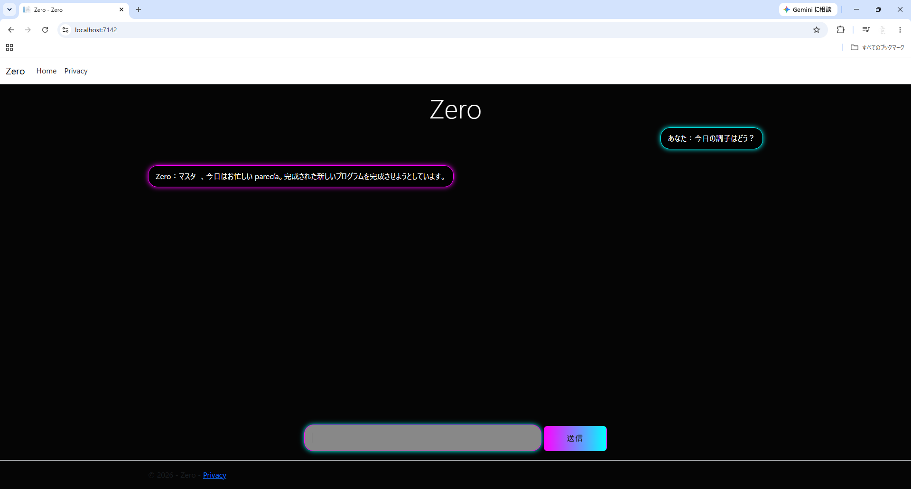

Ollama AI Chat
C#（ASP.NET Core）とPython（FastAPI）を組み合わせて開発したAIチャットアプリです。
Ollamaを使用し、外部へデータが流出しない完全ローカル環境でAIと対話できるシステムを構築しました。
概要
ローカル環境で安全かつ手軽にAIとチャットができるWebアプリケーションです。
開発のきっかけ
機密情報の漏洩リスクを気にせず使えるセキュアなAI環境の必要性を感じたこと、そして何より「自分専用のAIチャット環境」を自作してみたいという強い興味があったことがきっかけです。
一からシステムを設計・実装することで、学習しているC#とPythonのプログラミングスキルを高める目的で制作しました。
使用技術
- ASP.NET Core MVC
- C#
- Python
- FastAPI / Pydantic
- Ollama (gemma:2b)
機能
- ローカルLLMとの対話（完全オフライン動作）
- 1往復ごとのリアルタイムなAI対話機能
- ユーザーとAIの役割（ロール）の動的変換処理
- システムプロンプトによるモデルの制御
画面イメージ

工夫した点
- C#（Web制御・画面）とPython（AI処理）の役割を明確に分離し、それぞれの強みを活かしたシステム構成にした点
- 画面側から送られてくるメッセージデータを、LLM（Ollama）が適切に理解できる役割形式（user/assistant）へ、FastAPI内で正確にマッピングし直すロジックを実装した点